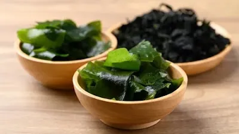

Élixirs naturels · 4 min de lecture
Élixir aux Algues Marines (Nori, Wakame, Kombu) : le rituel minéral profond pour revitaliser le corps et reminéraliser l’organisme

Introduction
La terre nourrit… mais la mer recharge.
Depuis des siècles, les peuples côtiers consomment les algues marines comme de véritables aliments-médecine. Riches, complètes, vivantes, elles concentrent ce que l’océan offre de plus précieux : minéraux, oligo-éléments et énergie vitale.
Dans nos modes de vie modernes, souvent pauvres en minéraux et trop riches en aliments raffinés, le corps se déminéralise lentement. Fatigue, stress, troubles hormonaux, baisse de concentration ou récupération difficile en sont souvent les signaux silencieux.
Aujourd’hui, je te propose un élixir naturel à base d’algues marines (nori, wakame et kombu), formulé avec une synergie d’ingrédients choisis pour créer une alchimie optimale pour la santé, la vitalité cellulaire et l’équilibre métabolique.
👉 Je tiens à vous rappeler une règle d’or que j’aime beaucoup et qui guide mes choix au quotidien : si la nature ne l’a pas créé, ne le buvez pas.
Le problème
Beaucoup de personnes souffrent sans le savoir de :
carences en minéraux et oligo-éléments,
fatigue chronique inexpliquée,
troubles de la concentration,
dérèglements thyroïdiens légers,
récupération lente après l’effort ou le stress.
Ces déséquilibres ne viennent pas toujours d’un manque de calories, mais d’un manque de densité nutritionnelle.
Le corps ne demande pas plus… il demande mieux.
La promesse
L’élixir aux algues marines agit comme un rechargeur minéral profond.
Il soutient les fonctions vitales, reminéralise l’organisme, favorise l’équilibre hormonal et renforce l’énergie de fond, sans stimulation artificielle.
Ce n’est pas un excitant.
C’est un nourrissant cellulaire.
Les bénéfices
Une reminéralisation complète de l’organisme
Une énergie plus stable et plus profonde
Un soutien naturel de la thyroïde et du métabolisme
Une meilleure récupération physique et nerveuse
Un renforcement global de la vitalité cellulaire
🌿 Pourquoi ce remède est efficace
Les algues marines sont parmi les aliments les plus riches et complets de la planète.
Elles contiennent naturellement :
de l’iode biodisponible,
du magnésium, du calcium, du fer,
des vitamines du groupe B,
des fibres spécifiques et des antioxydants marins.
Chaque algue joue un rôle précis :
Nori : soutient l’énergie et la vitalité cellulaire,
Wakame : favorise l’équilibre digestif et hormonal,
Kombu : ultra-reminéralisante, soutient le métabolisme.
Associées à des ingrédients comme le citron, le gingembre et l’eau tiède, elles deviennent hautement assimilables et parfaitement tolérées.
👉 Cette synergie agit au niveau cellulaire, nerveux et métabolique.
💪 Les bienfaits de l’élixir aux algues marines
Reminéralisation profonde
Idéal en cas de fatigue, stress, sport intense ou alimentation appauvrie.Soutien de la thyroïde
L’iode naturel contribue au bon fonctionnement hormonal (à dose maîtrisée).Énergie vitale durable
Les minéraux soutiennent la production d’énergie cellulaire.Détox douce et drainage
Les fibres marines aident à éliminer les toxines.Soutien du système nerveux
Le magnésium et les oligo-éléments favorisent l’équilibre nerveux.
🍋 La recette de l’Élixir Minéral & Vitalité aux Algues
Ingrédients (alchimie optimale)
½ cuillère à café de wakame séché
Un petit morceau de kombu séché (environ 2–3 cm)
Une pincée de paillettes de nori
300 ml d’eau chaude (non bouillante)
Le jus d’½ citron frais
Une pincée de gingembre frais râpé
Une goutte d’huile de sésame ou d’olive (optionnelle)
Pourquoi cette synergie fonctionne ?
Les algues apportent minéraux et oligo-éléments.
Le citron améliore l’assimilation minérale.
Le gingembre soutient la digestion et la circulation.
L’huile aide à l’absorption des nutriments liposolubles.
Préparation
Fais tremper les algues dans l’eau chaude pendant 10 minutes.
Retire le kombu (ou laisse-le pour plus d’intensité).
Ajoute le citron, le gingembre et l’huile.
Mélange doucement et bois tiède.
⏰ Comment l’utiliser
À consommer 2 à 3 fois par semaine, idéalement :
le matin,
ou en début de journée.
Peut être utilisé en cure de 2 à 3 semaines.
Écoute ton corps : les algues sont puissantes.
👥 À qui s’adresse ce rituel
Aux personnes fatiguées ou déminéralisées
À ceux qui manquent d’énergie stable
Aux sportifs et personnes stressées
À ceux qui souhaitent soutenir leur thyroïde naturellement
À toute personne cherchant une nutrition marine profonde et consciente
⚠️ Précautions
Ne pas surconsommer : les algues sont très concentrées.
Déconseillé en cas d’hyperthyroïdie sans avis médical.
Choisis des algues bio, contrôlées et de qualité alimentaire.
En cas de traitement médical, demande conseil à un professionnel de santé.
🌱 Conclusion & appel à l’action
L’élixir aux algues marines est un retour à l’intelligence de l’océan.
Il rappelle que l’énergie durable ne vient pas de la stimulation, mais de la densité nutritionnelle.
C’est un rituel puissant, ancestral et profondément régénérant, pour celles et ceux qui veulent nourrir leur corps à la racine.
👉 Si la nature ne l’a pas créé, ne le buvez pas.
Je partage régulièrement des élixirs, rituels et ressources bien-être pour t’aider à bâtir une santé solide, minérale et durable.
📚 Je suis auteur bien-être sous le pseudo Chest0 JM.S., mes ouvrages sont disponibles sur Amazon.
🔗 Retrouve tout mon univers ici :
👉 https://linktr.ee/Chest00
👉 Si tu veux aller plus loin, découvre aussi notre
Plus de 40 recettes d'élixirs dans les livres Chest0.
Voir les livres